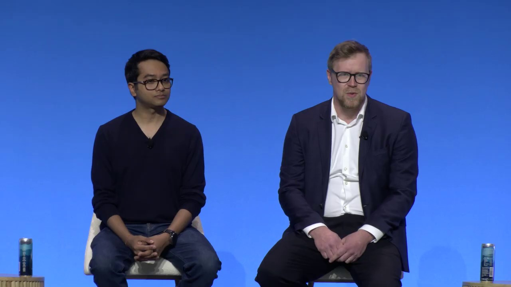
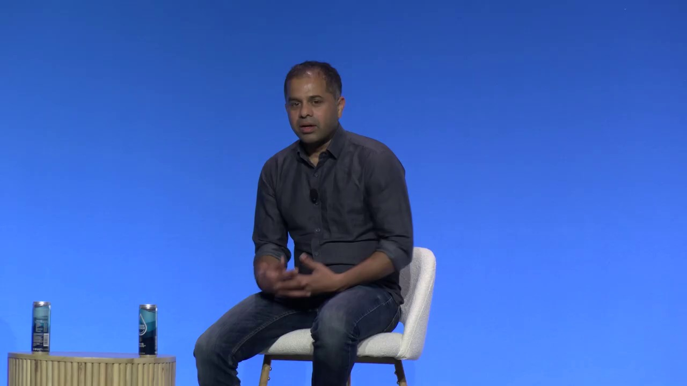
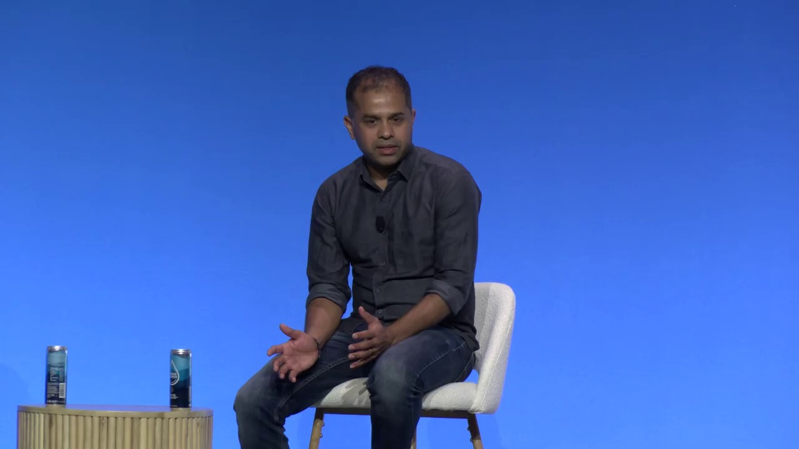
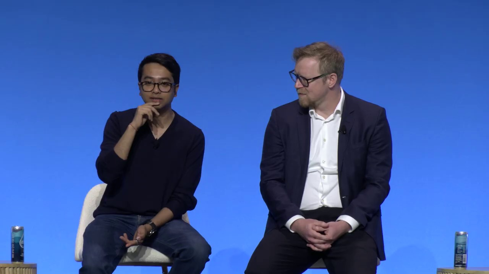
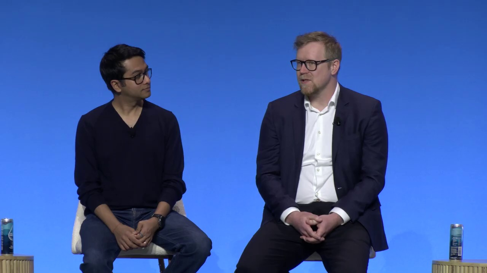
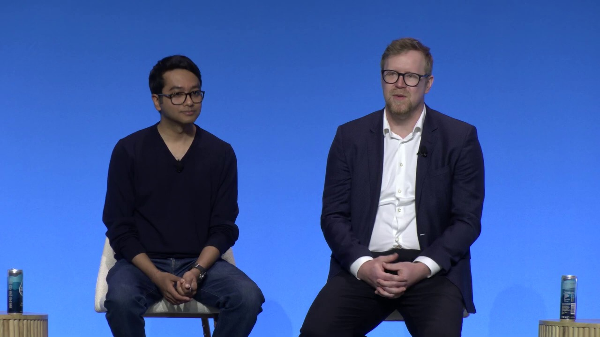
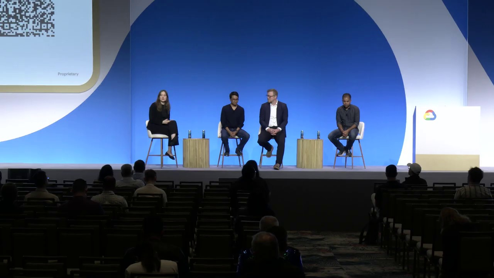

Key Moments







Summary & Script
From pilot to production: Scaling Gemini with proven practices
Source: https://www.youtube.com/watch?v=dBRPi41nrJw
Video ID: dBRPi41nrJw
Overview
The panel, moderated by Google Applied AI leader Donna, explored how three organizations—DeepMind, JetBrains, and Roblox—have moved Gemini from experimental pilots to production‑grade systems. Each speaker described their company’s mission, the specific Gemini models they use, and the real‑world challenges of scaling (latency, cost, reliability, and evaluation). The discussion highlighted practical engineering practices, observability needs, and the importance of rigorous, domain‑specific evaluation beyond academic benchmarks.
Topics Covered
- Introductions & company context – DeepMind’s applied AI team, JetBrains’ “Junior” AI development agent, and Roblox’s safety engineering group.
- How Gemini is used –
- Roblox: Gemini supplements specialized safety models for text, image, video, and 3D content moderation, handling ambiguous cases at scale (up to 700 k RPS).
- JetBrains: Gemini Flash is the default model for the Junior coding assistant, delivering strong quality‑to‑cost results and competitive benchmark performance.
- DeepMind: Gemini aids cross‑functional workflows (industry research, product brainstorming, code generation, vulnerability detection) and powers synthetic user‑study simulations.
- Engineering constraints when moving from pilot to production –
- JetBrains: Need for deep model‑behaviour analysis, prompt engineering, and continuous optimization of inference latency and token usage.
- Roblox: Balancing recall vs. false‑positive rate, prompt tuning, latency budgets (P90 ≈ 1 s with Gemini, P75 ≈ 300 ms using in‑house models), and cost containment.
- DeepMind: Immature scaffolding around serving infrastructure; importance of observability, drift detection, and rapid incident response.
- Best practices & tooling – Emphasis on robust observability, drift monitoring, uptime guarantees, and leveraging Google Cloud/Vertex AI serving platforms to simplify migration.
- Evaluation beyond benchmarks – Real‑world ROI requires hard, domain‑specific evaluation sets; metrics can be “gamed,” so continuous, realistic test corpora are essential.
- Future outlook – Ongoing improvements in model versions (1.5 → 2.0 → 3.0) and supporting infrastructure are making the pilot‑to‑production transition smoother.
Key Takeaways
- Hybrid approach: Combine bespoke, high‑precision models with Gemini for ambiguous or low‑confidence cases.
- Prompt engineering is an art: Fine‑tuning prompts is critical to maintain high recall while controlling hallucinations and false positives.
- Observability must be baked in: Monitoring latency, drift, and uptime from day 1 is essential for large‑scale deployments.
- Cost‑aware scaling: Even with powerful models, a strategy that routes only a fraction of traffic to Gemini preserves budget.
- Domain‑specific evaluation: Build difficult, production‑mirroring test sets; generic academic benchmarks rarely predict real‑world performance.
- Maturing scaffolding: New serving platforms (Vertex AI, Cloud AI) are reducing friction, but teams still need custom tooling for reliability.
- Iterative rollout: Early prototypes can be built quickly, but stable production requires months of testing, metric validation, and fail‑safe design.
Notable Quotes
- “The initial prototypes are easy. You can impress everybody with these large models, but taking it to production is really hard.” – Naren (Roblox)
- “We often end up in meetings where we get interesting terms thrown at us… Gemini was a really good partner helping us break down what block trade is.” – Arca (DeepMind)
- “We really think it’s the best model right now on the market… we’ve seen a ten‑times cost reduction per task.” – Nick (JetBrains)
- “The technology is fairly new… the lack of maturity of the scaffolding is causing a lot of the stress from going to pilot to production.” – Arca (DeepMind)
Podcast Script
JORDAN: Welcome to Episode 5 of SlackCasts by PodSlacker — where AI does the watching so you can do the listening. If you want a richer experience with today's episode, visit PodSlacker dot com slash SlackCasts — you'll find a written summary, key frame moments from the video, and an interactive AI chat to explore the topic as deep as you like. Now let's get into it.
MIKE: Thanks, Jordan. Let's set the stage. We have three heavy‑hitters: DeepMind’s applied AI lead Arca, JetBrains’ Nick who’s built the Junior coding assistant, and Naren from Roblox’s safety engineering team. All of them are moving Google Gemini from a research curiosity into production‑grade workloads.
JORDAN: Right, and each organization has a distinct mission. DeepMind’s group is a consultancy inside Google, helping external enterprises and governments translate domain problems into LLM‑driven solutions. JetBrains wants to embed a coding co‑pilot straight into IntelliJ‑family IDEs. Roblox is essentially a massive user‑generated content platform that needs to moderate text, images, video, and even 3D assets at sub‑second latency.
MIKE: The diversity is striking, but the common thread is “hybrid”—they pair Gemini with highly specialized in‑house models for the low‑entropy cases, and fall back to Gemini when confidence drops. Naren’s team, for instance, runs a high‑recall, high‑precision pipeline that routes ambiguous content to Gemini for a second opinion.
JORDAN: And the model choice matters. JetBrains opted for Gemini Flash as the default for Junior because its quality‑to‑cost ratio dominates the market. They benchmarked it on the terminal‑code benchmark (second place) and on the SW Rebench suite, where Flash matched Claude 2 and Opus 4.6 while achieving a ten‑fold cost reduction per task.
MIKE: That cost angle is huge for Roblox. Their traffic peaks at 700 k RPS, and latency budgets are razor‑thin. Naren told us their native filters ran at a P90 of 30 ms. Introducing Gemini pushed the P90 to about a second—acceptable for a fallback tier, but they keep the P75 at 300 ms by routing the bulk of traffic to in‑house models. It’s a classic recall‑precision‑latency trade‑off.
JORDAN: DeepMind’s use case is more internal. Gemini fuels everything from synthetic user‑study simulations to code generation, vulnerability detection, and even macro‑economic brainstorming. Arca highlighted a “block‑trade” example where Gemini helped the team unpack a half‑billion‑dollar trading concept they’d never encountered. That illustrates how LLMs act as a knowledge‑augmentation partner across the product lifecycle.
MIKE: Scaling those workflows revealed a different pain point: the scaffolding around serving infrastructure. Arca mentioned “immature scaffolding” as a major source of stress when moving from pilot to production. Without robust observability, drift detection, and automated rollback, a model upgrade can become a firefighting exercise.
JORDAN: Observability was a repeated theme. All three panelists emphasized instrumenting latency, token usage, and error rates from day one. JetBrains built custom dashboards that break down inference time per token, prompt‑to‑response latency, and “step count” in multi‑turn interactions. That level of granularity lets them spot regressions before they hit end users.
MIKE: Roblox took a similar approach but added a real‑time health check layer. They load‑test their Gemini endpoint under simulated traffic spikes, monitor recall vs. false‑positive rates, and enforce a hard cost ceiling—otherwise the platform would be financially unsustainable. It’s a pragmatic “only send the hard cases to Gemini” policy.
JORDAN: Cost awareness also drives routing logic. JetBrains runs a cost‑model that predicts per‑token pricing across Gemini Flash, Gemini Pro, and an internal code model. When the projected cost per inference exceeds a threshold, they fall back to the internal model, preserving a ten‑times cost advantage for bulk operations.
MIKE: Speaking of routing, the prompt‑engineering art comes up again. Naren warned that a broader prompt boosts recall but also hallucinates wildly, inflating false positives. The team iterates on prompt templates with DeepMind’s help, but it remains a manual, empirical process—no plug‑and‑play solution yet.
JORDAN: JetBrains solved part of that by abstracting prompts into reusable “instruction modules.” Each module is version‑controlled, A/B‑tested, and tied to a specific token budget. This reduces drift when new Gemini releases appear, because they can swap in a newer model without rewriting the prompt hierarchy.
MIKE: That ties into the evaluation framework they all discussed. Traditional academic benchmarks are gamed; they don’t reflect production ROI. Roblox builds a three‑phase evaluation set—easy, hard, adversarial—that mirrors real user‑generated content. They then measure recall, false‑positive rate, and cost per thousand requests on each tier.
JORDAN: DeepMind takes it a step further with synthetic user studies. They generate persona‑driven conversations, feed them through Gemini, and compare the outputs against a ground‑truth “expert panel.” This gives a domain‑specific signal that can be tracked across model upgrades, catching subtle drifts that standard benchmarks miss.
MIKE: And JetBrains evaluates on task‑specific metrics: successful code generation, compilation rate, and developer‑time saved. They also run “hard‑mode” hidden tests that mimic real bugs. Their evaluation pipeline runs nightly, feeding results back into the prompt‑module repository.
JORDAN: The panel also highlighted tooling upgrades. Arca mentioned Google Cloud’s Vertex AI serving platform, which abstracts away the autoscaling, A/B routing, and health‑checking layers. Roblox has built a thin “Gemini façade” that injects custom latency limits and cost caps before hitting Vertex.
MIKE: JetBrains, on the other hand, uses a hybrid on‑prem + Vertex deployment. The on‑prem edge handles low‑latency IDE interactions, while bulk batch tasks go to Vertex for cost efficiency. This distributed serving approach lets them meet the 300 ms P75 SLA while still leveraging the cloud’s elasticity for spikes.
JORDAN: Iterative rollout is another consensus. Naren described a Thanksgiving‑week prototype that broke in two hours after a rushed launch. The lesson: you need a staged rollout—canary, shadow, and full‑traffic phases—plus automated rollback based on latency and false‑positive thresholds.
MIKE: DeepMind echoed that. Their migration from Gemini 1.5 to 2.0 took months of metric validation, drift monitoring, and “model‑in‑the‑loop” testing. The upcoming jump to Gemini 3.0 is expected to be smoother because the serving stack has matured, but they’re still budgeting for custom validation suites.
JORDAN: Summarizing the best practices: hybrid model ensembles, rigorous prompt versioning, domain‑specific evaluation pipelines, and baked‑in observability from latency to token economics. And all three teams agree that the “scaffolding”—the serving, monitoring, and cost‑control layers—is now the make‑or‑break factor for productionizing LLMs.
MIKE: For senior practitioners listening, the takeaway is clear: you can’t just drop a shiny new LLM into production and call it a day. You need an engineering ecosystem that treats the model as a volatile dependency—track drift, enforce SLAs, and keep a cost model in the loop. Otherwise you’ll end up like Roblox’s Thanksgiving experiment—impressive demos that crumble under real‑world load.
JORDAN: That wraps up our deep dive into scaling Gemini across three very different, yet surprisingly parallel, production environments. Thanks to Arca, Nick, and Naren for sharing the gritty details.
JORDAN: That's a wrap on today's SlackCast. Head over to PodSlacker dot com slash SlackCasts for the written summary, visual key moments, and an AI chat to dive even deeper into today's topic. Until next time — slack off smarter.